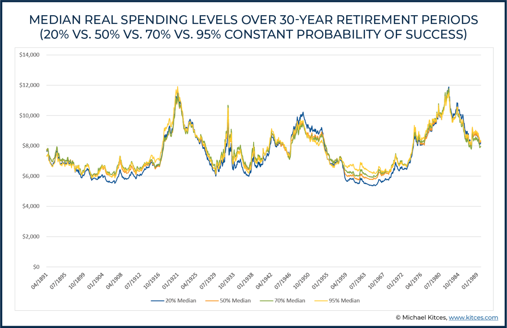
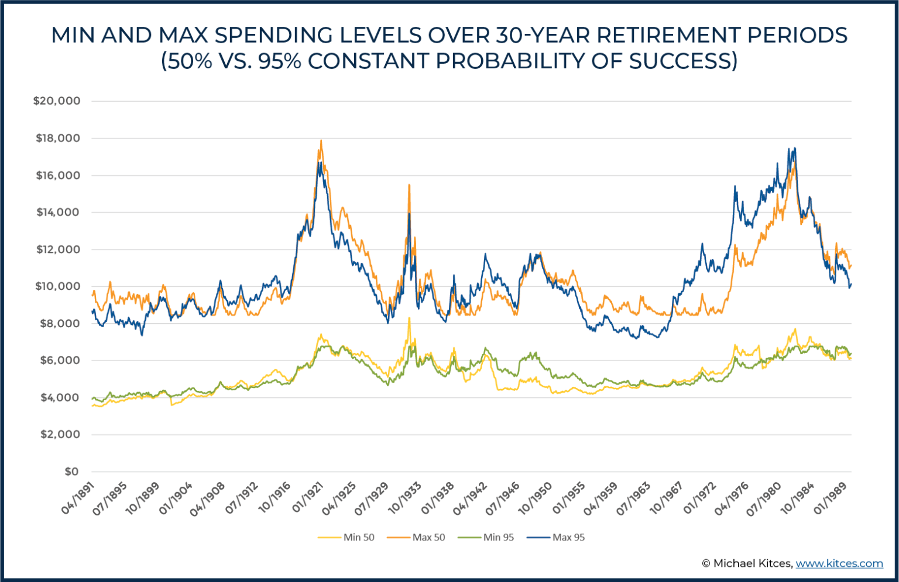
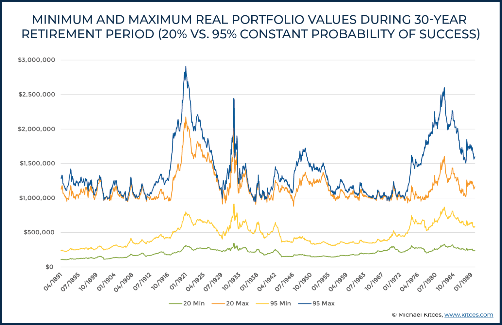
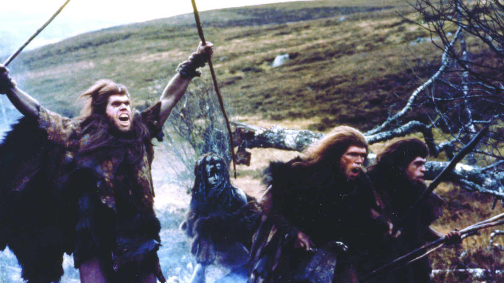

https://openpath.financial/econome
download slides and get free/unlimited access to the Risk-Based Guardrails Toolkit
You announced retirement on r/financialindependence. Got the GFY. And still won't spend the money. Your portfolio throws off enough in dividends to make you LeanFI — and you feel guilty buying the fancy coffee at Costco.
Even a 50% probability of success can be perfectly reasonable — for someone willing to adjust. The median, minimum, and maximum spending over a 30-year journey is remarkably similar whether you targeted 50% or 95%.
What's different? Legacy. One person dies with a much bigger pile of money they never used.

Median spending at 20%, 50%, 70%, and 95% probability of success tracks nearly identically across every historical period. The target barely matters.

Min and max spending at 50% vs. 95% success — the floors and ceilings are closer than you'd expect. The real cost of targeting 95% is unspent wealth, not security.

Portfolio values at 20% vs. 95% success diverge dramatically. Targeting 95% means dying with far more money — wealth you spent your life earning but never lived on.
The operating system running in your brain was written two hundred thousand years ago on the African savanna. That code has never received an update.

Give half a room a nice notebook. Give the other half nothing. Ask both what it's worth. The owners demand roughly twice the price. Every time.
You are not broken for feeling this way. But the mismatch is costing you years of your life.
You don't know. And because you don't know, every market dip is a crisis. Every red day is an invitation to panic. You're flying the plane without instruments.
She doesn't need to make a decision under stress. She already made it.
Because we can step through these scenarios month by month, we build confidence in advance. The point is not to plan less carefully. The point is to plan differently.
https://openpath.financial/econome
download slides and get free/unlimited access to the Risk-Based Guardrails Toolkit